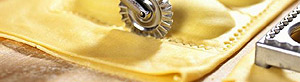

Gratinierte Ravioli
5 von 6pasta teig vom coop auslegen. kleine portionen verteilen und die zwischenräume mit wasser bepinseln, ein zweiter teigstreifen darüber legen und mit dem "teig-rädli" (knapp neben der füllung) trennen. in knapp kochendem wasser ca. 3 min sieden lassen, gut abtropfen und in einer gratinform verteilen. mit wenig rahm übergiessen, parmesan und pfeffer darüber streuen und einige minuten im ofen gratinieren. spinat-ricotta:
ricotta, spinat, muskat, parmesan, ein ei sowie pfeffer und salz zu einer einheitlichen masse verrühren.
steinpilz: 25 g getrocknete steinpilze einweichen und fein schneiden. frische champignons und eine charlotte
ebenfalls in scheibchen schneiden und alles mit oliven-oel andämpfen. mit pfeffer, salz und peterli
abschmecken, abkühlen lassen.
